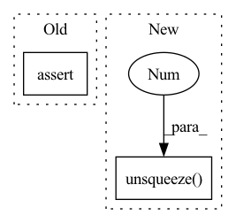

Pattern ID :1977
Before Change
if padding_mask is not None:
x = x * (1.0 - padding_mask.unsqueeze(1).type_as(x))
assert not self.bidirectional or state is None, "Bidirectional EMA does not support incremental state"
if state is not None:
saved_state = self._get_input_buffer(state)
if "prev_state" in saved_state:After Change
u_f = torch.fft.rfft(u_.float(), n=2 * l_fft)
y = torch.fft.irfft(u_f * k_f, n=2 * l_fft)[..., s:s + L] // (B H L)
y = y.type_as(u)
y = y + u * self.omega.unsqueeze(-1 ) // (B H L)
y = y.transpose(-1, -2)
return y, None // empty stateIn pattern: SUPERPATTERN
Frequency: 3
Non-data size: 2
Instances Fragment ID: 7334808
Project Name: hazyresearch/state-spaces
Commit Name: b766e8779997046a5b3bad674e89625e8963b0d2
Time: 2022-11-18
Author: albertfgu@gmail.com
File Name: src/models/sequence/ss/ema.py
M Class Name: MultiHeadEMA
N Class Name: MultiHeadEMA
M Method Name: forward(4)
N Method Name: forward(4)
M Parent Class: nn.Module
N Parent Class: nn.Module
M File Name: src/models/sequence/ss/ema.py
N File Name: src/models/sequence/ss/ema.py
M Start Line: 166
M End Line: 223
N Start Line: 112
N End Line: 158
Before Change
break
// Validation check
assert greedy or len(mel_outputs) == T_decoder
// Back to batch first
attn_scores = torch.stack(attn_scores).transpose(0, 1)After Change
// Store predictions
mel_outputs.append(output)
attn_scores.append(attention_score.unsqueeze(1 ) )
stop_tokens.extend([stop] * self.r)
if greedy: Fragment ID: 7334807
Project Name: thuhcsi/tacotron
Commit Name: fea9ec535ec373aad564646f4f292fbee0217c29
Time: 2021-03-18
Author: johnson.tsing@gmail.com
File Name: model/tacotron.py
M Class Name: Decoder
N Class Name: Decoder
M Method Name: forward(4)
N Method Name: forward(4)
M Parent Class: nn.Module
N Parent Class: nn.Module
M File Name: model/tacotron.py
N File Name: model/tacotron.py
M Start Line: 87
M End Line: 187
N Start Line: 88
N End Line: 180
Before Change
break
// Validation check
assert greedy or len(mel_outputs) == T_decoder
// Back to batch first
attn_scores = torch.stack(attn_scores).transpose(0, 1)After Change
// Store predictions
mel_outputs.append(output)
attn_scores.append(attention_score.unsqueeze(1 ) )
stop_tokens.extend([stop] * self.r)
if greedy: Fragment ID: 7334805
Project Name: thuhcsi/tacotron
Commit Name: fea9ec535ec373aad564646f4f292fbee0217c29
Time: 2021-03-18
Author: johnson.tsing@gmail.com
File Name: model/tacotron2.py
M Class Name: Decoder
N Class Name: Decoder
M Method Name: forward(4)
N Method Name: forward(4)
M Parent Class: nn.Module
N Parent Class: nn.Module
M File Name: model/tacotron2.py
N File Name: model/tacotron2.py
M Start Line: 127
M End Line: 224
N Start Line: 127
N End Line: 216